如何量化缠中说缠的线段
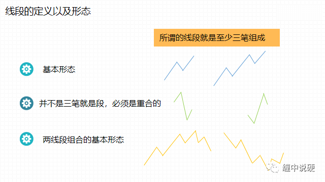
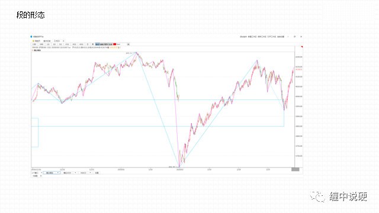
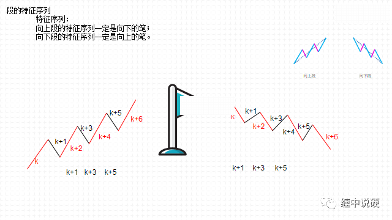
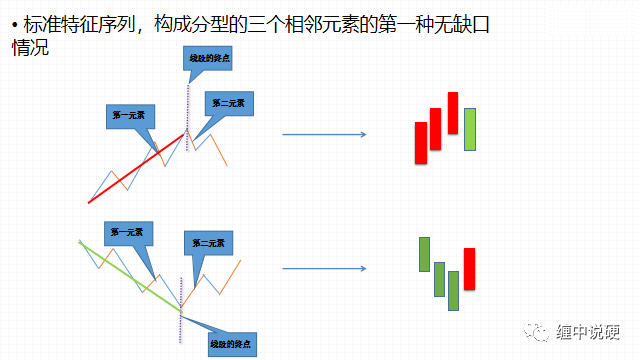
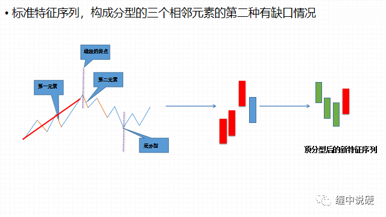
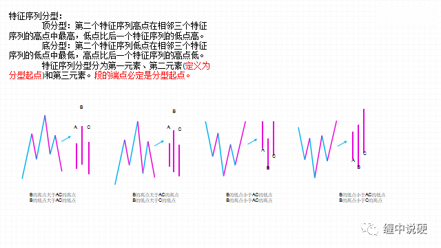
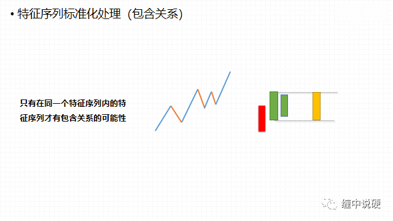
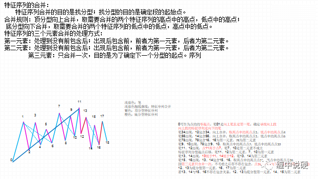
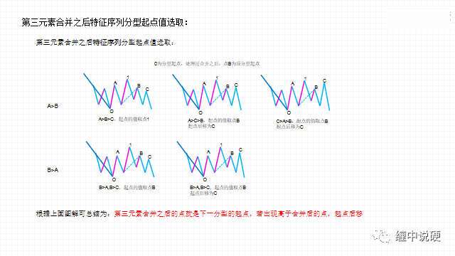
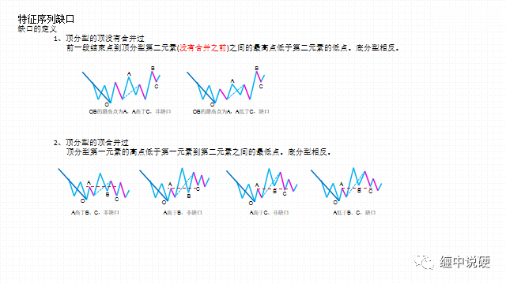
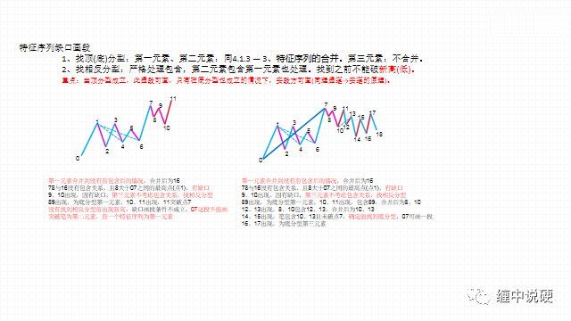
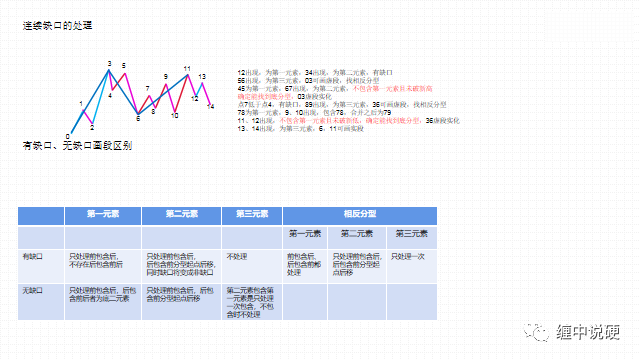
缠论悟语
买卖点相关定理、定律和程序：
第三类买卖点定理：
一个次级别走势类型向上离开缠中说禅走势中枢，然后以一个次级别走势类型回试，其低点不跌破 ZG，则构成了第三类买点；
一个次级别走势类型向下离开缠中说禅走势中枢，然后以一个次级别走势类型回抽，其高点不升破 ZD，则构成第三类卖点。
（而对于第三类买卖点，其意义就是对付中枢结束的。一个级别的中枢结束，无非面对两种情况：
a、转成更大的中枢；
b、上涨或下跌直到形成新的该级别中枢。
第三类买卖点就是告诉什么时候发生这种事情的，而在第二、三买卖点的本级别走势类型之间，都是中枢震荡，这时候，是不会有该级别的买卖点的，因此，如果参与其中的买卖，用的都是低级别的买卖点。）
【缠论悟语】“缠中说禅买卖点定律一”：任何级别的第二类买卖点都由次级别相应走势的第一类买卖点构成。
这样，就像前面曾说过的，任何由第一、二类买卖点构成的缠中说禅买卖点，都可以归结到不同级别的第一类买卖点。由此得到：
“缠中说禅趋势转折定律”：
①任何级别的上涨转折（匪注：上涨走势完成转折成盘整或下跌）都是由某级别的第一类卖点构成的；
②任何级别的下跌转折（匪注：下跌走势完成转折成盘整或上涨）都是由某级别的第一类买点构成的。
注意！这某级别不一定是次级别，因为次级别里可以是第二类买卖点，而且还有这种情况，就是不同级别同时出现第一类买卖点，也就是出现不同级别的同步共振，所以这里只说是某级别。